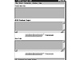
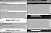
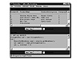
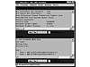

|
|
 |

|
Developing Java Enterprise Applications
by Stephen Asbury ; Scott R. Weiner
Wiley Computer Publishing, John Wiley & Sons, Inc.
ISBN: 0471327565 Pub Date: 02/01/99

|
JDBCTest
If you do not have JDBCTest installed, you may download and install it from http://java.sun.com/products/jdbc. When JDBCTest starts, the screen in Figure 3.5 appears.
Press the Press Here To Continue button to load the main JDBCTest window. This window, shown in Figure 3.6, has a menu bar that allows you to connect to a data source, explore its metadata, and even execute SQL commands. The main window has four parts: a menu bar, a list of data source connections, result output from the driver, and a box that displays the Java code executed to perform your requests. This last box is valuable in learning JDBC because you can execute a command and then cut and paste the code into your own application. It is a quick technique for learning the library.
Follow these steps to try out JDBCTest:
Figure 3.5 Startup screen for JDBCTest.

Figure 3.6 JDBCTest main screen.
- 1. From the Driver menu, select Register Driver. A panel with a text field appears.
- 2. Type sun.jdbc.odbc.JdbcOdbcDriver and press Return. This registers the JDBC–ODBC bridge driver. The Java code generated is displayed in the Java code text box.
- 3. Now that you have registered the driver, select Connect to DB from the Connection menu. A panel displays fields for you to type the URL for the data source as well as the login name and password. In the Database field, type: jdbc:odbc:InventoryUse the default name and password, so leave those fields blank.
- 4. Click the Connect button. Assuming you have a registered ODBC data source called Inventory, you now have a connection. If the connection was established successfully, the JDBCTest main screen indicates there were no problems, and the Connection panel for your new connection is displayed. This panel, shown in Figure 3.7, allows you to interact with your data source. It displays feedback from the connection and the Java source code for the executed commands.
- 5. Now issue a SQL statement on our data source. In the Connection panel, select Create Statement from the Connection menu. Before executing SQL commands, a Statement object to hold your SQL must be created. Observe the Java code generated in the Connection window by executing this command.
- 6. After creating a statement, fill it with SQL. To do this, select Execute Stmt Query from the Statement menu in the Connection panel. The Execute Query Panel displays. In this panel, type the following query: SELECT * FROM INVENTORY.

Figure 3.7 JDBCTest connection screen.
Then click the Submit button. In the Connection panel you should see that the statement returned a result set that contains a list of return values.
- 7. From the Results menu, select Show All Results. Figure 3.8 shows how the Connection panel will look after you do so.
- 8. Now that you have looked at values in the database, finish by looking at the attributes of the database itself. To do this, select Get DB Meta Data from the Connection menu of the Connection panel. This creates a result set containing information about the database.
- 9. To view the metadata, select Show Meta Data from the MetaData menu in the Connection panel. In the top text box are all of the attributes of the database that are available through the JDBC driver. In the bottom text box is the Java code used to print these values. These windows are shown in Figure 3.9. Scroll down the list of values to get a feel for the types of information available to you. If you have any questions about the meaning of a value, refer to Appendix A, which lists the DBMetaData methods and their meanings.
As you can see, JDBCTest offers a great deal of information about the data source that you can use to optimize and configure queries. Using this information inside your application allows you to dynamically configure data access routines. For example, knowing if the data source supports the GROUP BY clause can help you configure how to structure your queries. Let’s take a look at an example for accessing and processing database metadata in your application.

Figure 3.8 JDBCTest displaying results.

Figure 3.9 JDBCTest displaying metadata.
The Connection object provides you with this information through an object implementing the DatabaseMetaData interface. Once you have a Connection object, query it for information about the structure of the underlying database by calling getMetaData(). This method returns an object implementing the DatabaseMetaData interface. (Appendix A lists the information you can retrieve about the database from the DatabaseMetaData object.)
This example creates a connection to the Inventory database and then prints a list of all the tables and their columns by requesting the database metadata from the Connection object, then requesting a list of available tables by calling the DBMetaData method getTables(). This returns a result set containing information about the tables in the database.
The method getTables takes the parameters listed in Table 3.8. This method returns a result set that consists of values returned from the database query. This result set is described later in this chapter. It contains the columns described in Table 3.9. All results in this result set are strings.
In the next example, the table names and the table types for all tables (columns 3 and 4) are printed to the console. The results are shown in Figure 3.10.
| Table 3.8 The getTables() Parameters
|
|
| PARAMETER
| USE
|
|
| String catalog
| “” retrieves those without a catalog; null means drop catalog name from the selection criteria
|
|
| String schemaPattern
| A schema name pattern; “” retrieves those without a schema
|
|
| String tableNamePattern
| A table name pattern
|
|
| String[] types
| A list of table types to include; null returns all types
|
|
| Table 3.9 The getTables() Result Set Values
|
|
| COLUMN NAME
| VALUE
|
|
| 1. TABLE_CAT
| Table catalog (may be null)
|
|
| 2. TABLE_SCHEM
| Table schema (may be null)
|
|
| 3. TABLE_NAME
| Table name
|
|
| 4. TABLE_TYPE String
| Table type such as TABLE, VIEW, ALIAS
|
|
| 5. REMARKS
| Comments about the table
|
|
|


){kind=link}
){kind=link}
){kind=link}
){kind=link}
){kind=link}
){kind=link}
){kind=link}
){kind=link}
){kind=link}
){kind=link}